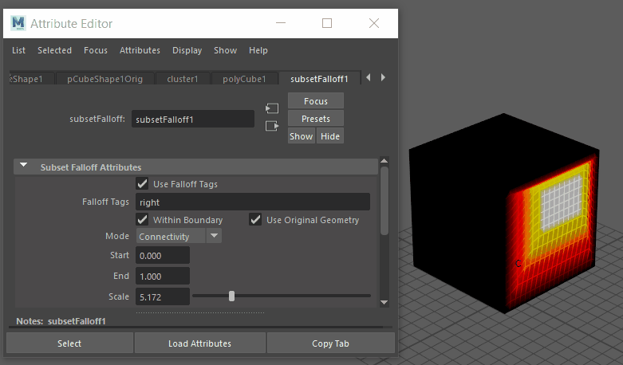

在“子集衰减”(Subset Falloff)的“属性编辑器”(Attribute Editor)部分，您可以调整各种特性以控制子集衰减的效果。
访问“子集衰减”(Subset Falloff)的“属性编辑器”(Attribute Editor)构件
- 将变形器衰减应用于几何体后，在“属性编辑器”(Attribute Editor)的“变形器属性”(Deformer Attributes)构件中选择“创建子集衰减”(Create Subset Falloff)。在“变形器属性”(Deformer Attributes)表的“衰减”(Falloff)列的“子集衰减”(Subset Falloff)单元格中，双击“子集衰减”(Subset Falloff)以切换到“子集衰减属性”(Subset Falloff Attributes)。
- 使用衰减标记(Use Falloff Tags)
- 启用此选项后，可使用组件标记定义衰减效果。如果此选项处于非活动状态，则变形将应用于整个几何体。
- 衰减标记(Falloff Tags)
- 键入组件标记的名称以定义衰减效果。可以在此字段中使用正则表达式。按 Enter 键以应用选择。
- 如果要确保标记不被更改，请在此字段上单击鼠标右键，然后选择“锁定属性”(Lock Attribute)。
- 在边界内
- 启用此选项后，可在指定标记的限制范围之内或之外约束衰减效果。

在立方体的右侧组件标记上切换“在边界内”(Within Boundary)设置。
- 在“在边界内”(Within Boundary)选项上单击鼠标右键以进行更多选择：
选项 功能 subsetFalloff_withinboundary.output 在“属性编辑器”(Attribute Editor)中创建 subsetFalloff_withinboundary 构件，您可以在其中调整动画曲线。 创建新表达式 打开“表达式编辑器”(Expression Editor)，以便创建表达式。 设置关键帧 在由“当前时间指示器”(Current Time Indicator)显示的动画点处，设置关键帧。
设置受驱动关键帧... 打开“设置受驱动关键帧”(Set Driven Key)窗口，以便让属性驱动另一个对象的属性。 断开连接 移除关键帧以及与属性的所有连接。
锁定属性 冻结设置，以便无法对其进行更改。 - 使用原始几何体(Use Original Geometry)
- 使用对象的原始几何体作为变形的影响物。
- 在“使用原始几何体”(Use Original Geometry)选项上单击鼠标右键以进行更多选择：
选项 功能 创建新表达式 打开“表达式编辑器”(Expression Editor)，以便创建表达式。 设置关键帧 在由“当前时间指示器”(Current Time Indicator)显示的动画点处，设置关键帧。
设置受驱动关键帧... 打开“设置受驱动关键帧”(Set Driven Key)窗口，以便让属性驱动另一个对象的属性。 锁定属性 锁定权重值。Maya 会用灰色背景显示已锁定的属性。若要解除锁定，请单击鼠标右键，然后选择“解除锁定属性”(Unlock Attribute)。
- 模式(Mode)
- 选择子集定义衰减的方式：
选项 功能 连接 根据网格拓扑（而非距离），使用连接级别定义衰减效果。 体积 使用对象空间定义衰减效果的距离。 - 开始(Start)/结束(End)
- 用于定义衰减效果的开始和结束，反映在所选组件标记和缩放设置中。
- 在“开始/结束”(Start/End)字段上单击鼠标右键以进行更多选择：
选项 功能 创建新表达式 打开“表达式编辑器”(Expression Editor)，以便创建表达式。 设置关键帧 在由“当前时间指示器”(Current Time Indicator)显示的动画点处，设置关键帧。
设置受驱动关键帧... 打开“设置受驱动关键帧”(Set Driven Key)窗口，以便让属性驱动另一个对象的属性。 创建新纹理... 打开“创建渲染节点”(Create Render Node)窗口，以便向衰减添加新的纹理节点。 锁定属性 冻结设置，以便无法对其进行更改。 - 缩放
- 使衰减效果倍增。

在立方体的右侧组件标记上调整“缩放”(Scale)设置。